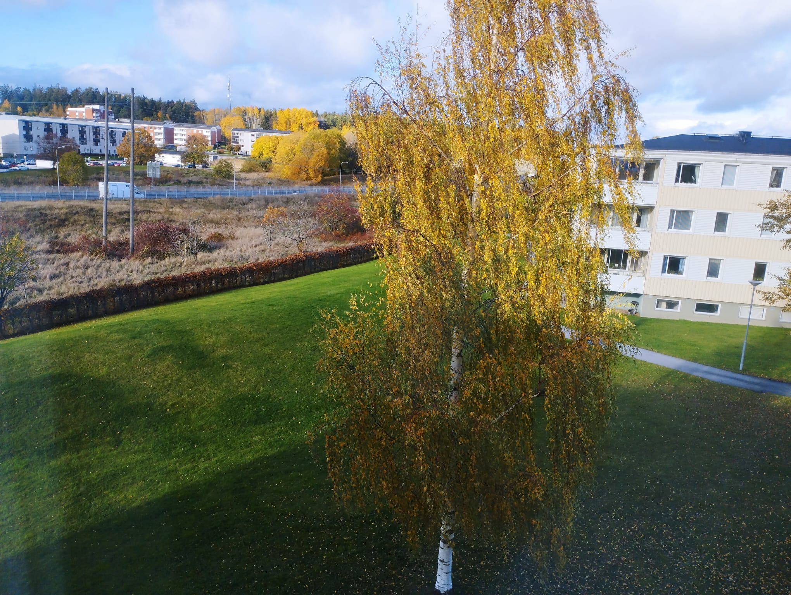
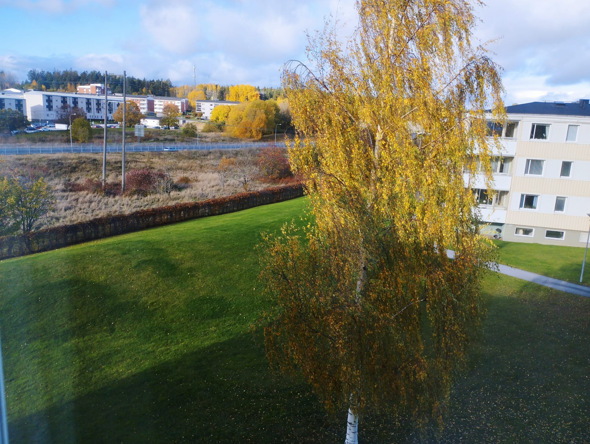
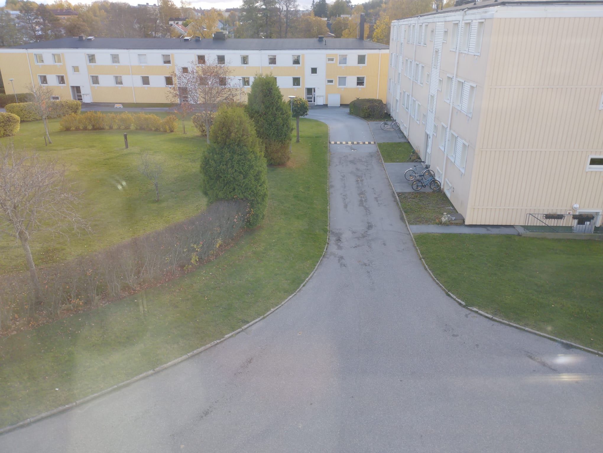

våra arbets partner

Vi sköter Täby kommune ungefår 5% i hela arbete

Vi sköter snown i Norrtälje hela nya äfferar område
Vi sköter myckey i norrort nära täby, Dandryd sjukhus, Dandryd station
Vi utför jobbet till privata personer förening och till kommuner behöver som sköta trädgård, gräsklipning, sköta snow
Vi Samarbeta med Norrtälje kommune och samarbeta med täby kommune
Täby kommune sköter vi snow trädgård arbete och hela Dandryd buss station
vi jobbar i Norrtälje kommune vi sköter snow på vinterna och vi städar sand på våren från gåtorna
vi sköter snow på vinterna vi gör vad vi lovar i tid

Vi sköter Täby kommune ungefår 5% i hela arbete
Vi sköter snown i Norrtälje hela nya äfferar område
Vi sköter myckey i norrort nära täby, Dandryd sjukhus, Dandryd station

Om det är första gången du anlitar någon för trädgårdsskötsel så kan det tänkas att det finns en hel del i trädgården som behöver ändras för att matcha era önskemål. Varje trädgård är unik och kräver olika underhåll. Kontakta oss för rådgivning om vad som krävs för just din trädgård.
Vi erbjuder trädgårdsskötsel Täby, Norrtälje, Stockholm

Om det är första gången du anlitar någon för trädgårdsskötsel så kan det tänkas att det finns en hel del i trädgården som behöver ändras för att matcha era önskemål. Varje trädgård är unik och kräver olika underhåll. Kontakta oss för rådgivning om vad som krävs för just din trädgård.
Vi samarbetar med trädgårdsskötare i hela Stockholm som är kvalitetskontrollerade så att de har all den kunskap som krävs för att hantera din trädgårdsskötsel på ett proffsigt sätt. Våra trädgårdsskötare kan även hjälpa dig att planera din trädgård och anpassa den efter er livsstil såväl som att ta hand om den löpande trädgårdsskötseln.
Om det är första gången du anlitar någon för trädgårdsskötsel så kan det tänkas att det finns en hel del i trädgården som behöver ändras för att matcha era önskemål. Varje trädgård är unik och kräver olika underhåll. Kontakta oss för rådgivning om vad som krävs för just din trädgård.